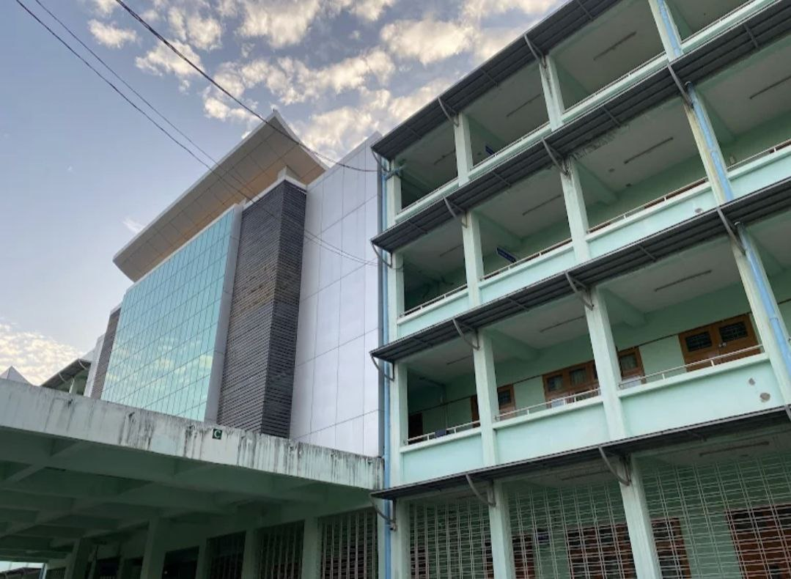
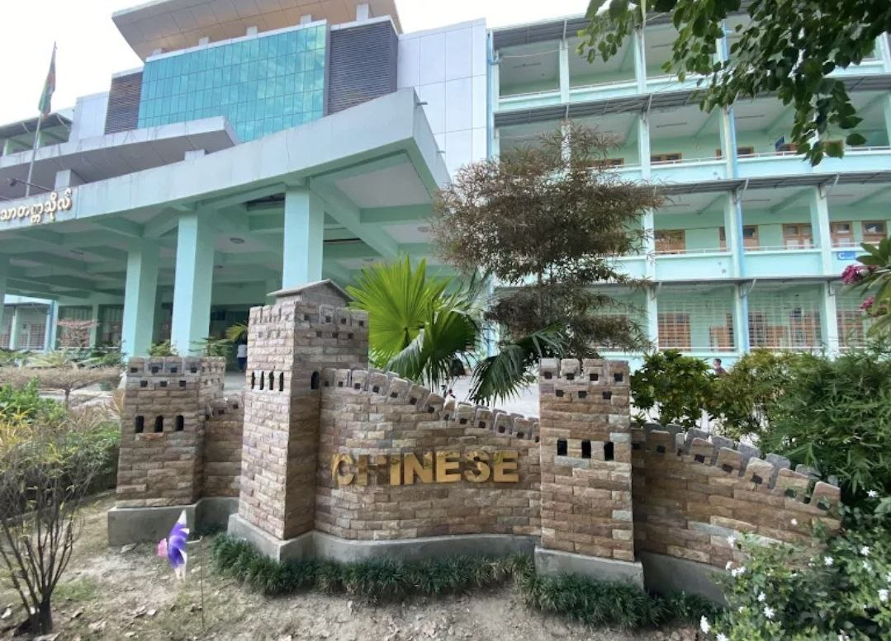
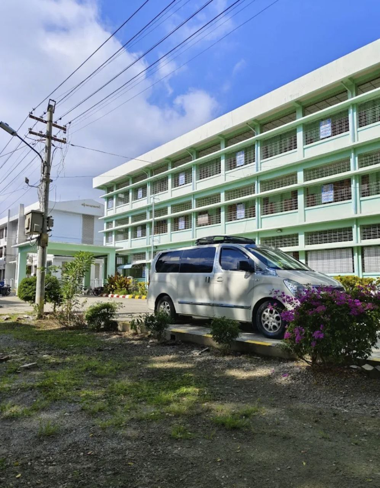
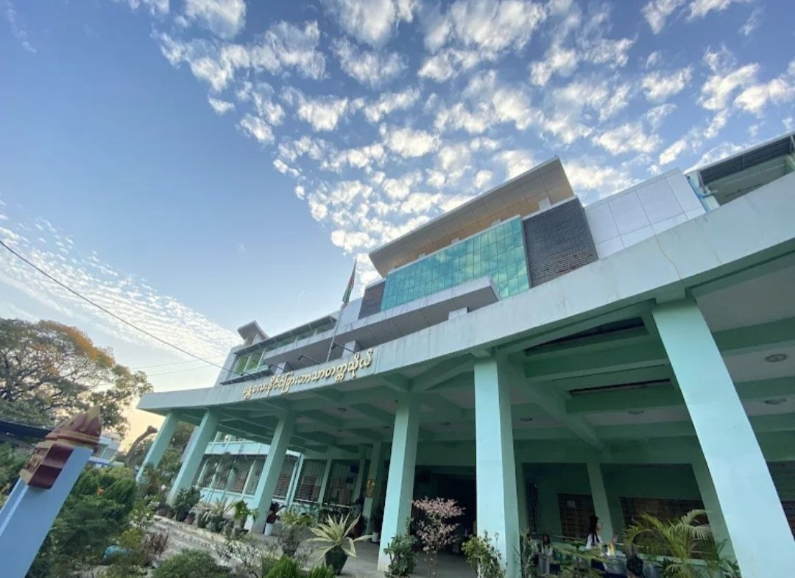
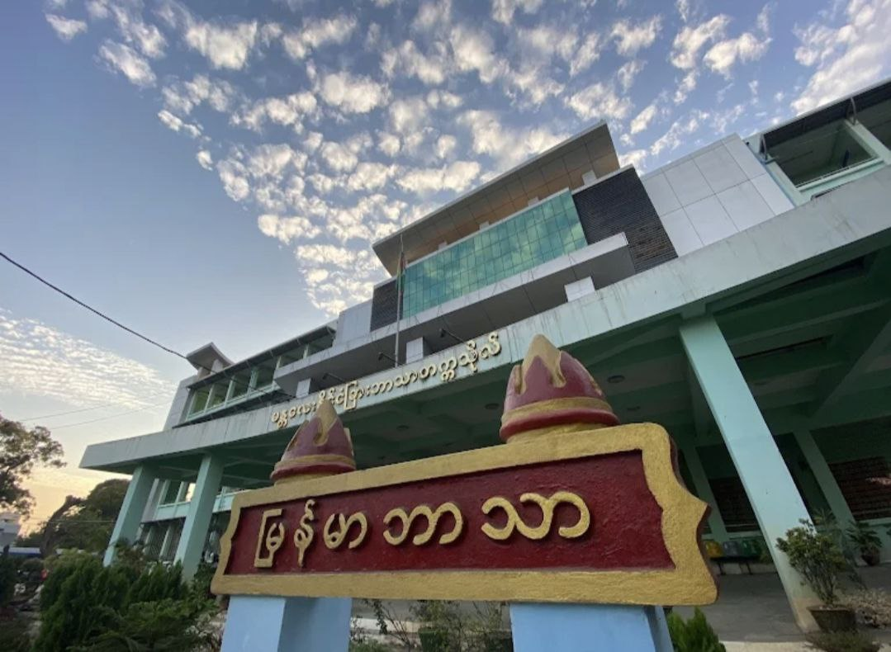

About the University
မန္တလေးနိုင်ငံခြားဘာသာတက္ကသိုလ်သည် မန္တလေးတိုင်းဒေသကြီး၊ မန္တလေးမြိုတွင်တည်ရှိပြီး မြန်မာနိုင်ငံရှိ နိုင်ငံခြားဘာသာတက္ကသိုလ် နှစ်ခုအနက် တစ်ခုအပါအဝင်ဖြစ်သည်။ အချိန်ပြည့်ဘွဲသင်တန်းများကို သင်ကြားလျက်ရှိပြီး အင်္ဂလိပ်ဘာသာ ဒီပလိုမာသင်တန်းများ အပြင် တရုတ်၊ ကိုရီးယား၊ ဂျပန်၊ ဂျာမန်၊ ရုရှား စသောနိုင်ငံခြားဘာသာ ဒီပလိုမာသင်တန်းများလည်း ဖွင့်လှစ်ထားရှိသည်။
Why Choose MUFL?
11 Foreign Language Departments
Specialized training in English, German, French, Japanese, Chinese, Korean, Spanish, Russian, Italian, Thai and Indonesian.
Language Immersion Environment
BA Foreign Languages with intensive speaking practice, conversation classes and cultural immersion activities.
Modern Language Facilities
Language laboratories, multimedia classrooms and cultural resource centres for authentic language learning.
Serves Upper Myanmar Region
Provides accessible foreign language education for students from Mandalay, Shan State and surrounding regions.
Campus Gallery

🏛️

💻

👥
Academic Programs
Foreign language degree programmes for Upper Myanmar
BA Foreign Languages
Bachelor of Arts (BA)Core 4-year degree offered through 11 language departments with intensive training in speaking, listening, reading and writing skills.
Language Majors
11 SpecializationsStudents specialize in one primary foreign language from 11 departments while studying English as second language and Myanmar language.
Postgraduate Studies
Limited MA ProgrammesMaster's programmes available in English Linguistics and select high-demand languages for advanced language professionals.
Language Initiatives & Regional Partnerships
Upper Myanmar language development programmes
Regional Language Certification Centre
MUFL conducts JLPT (Japanese), HSK (Chinese), TOPIK (Korean) and TOEIC testing for Upper Myanmar students and professionals.
China-Myanmar Language Programmes
Specialized Chinese language courses for trade, tourism and border region development with Yunnan province partnerships.
ASEAN Languages & Translation
Focuses on Thai, Indonesian and regional languages important for Mandalay's role as Myanmar's ASEAN trade gateway.
Regional Teacher Training
Trains foreign language teachers for schools across Mandalay Division, Shan State and surrounding regions.
Student Life at MUFL
Language immersion in Mandalay's cultural heart

Modern Language Laboratories
Multimedia language labs equipped for audio, video and computer-assisted language learning across 11 foreign languages.

Interactive Conversation Classes
Small group classes focused on speaking practice, language games, cultural discussions and real-life conversation scenarios.
Regional Cultural Festivals
Chinese New Year celebrations, Thai Songkran, Japanese matsuri, Korean hanbok days - authentic cultural events enhance language learning.
Career Opportunities
Regional & international pathways for MUFL graduates
China-Myanmar Trade & Business
China border trade companies, Yunnan province businesses, Mandalay export-import firms, tourism agencies serving Chinese markets.
High demand / competitiveRegional Translation Services
Chinese-Myanmar document translation, ASEAN trade contracts, tourism materials, regional government offices and businesses.
Project/contract basedASEAN Regional Business
Thai/Indonesian import-export, Mandalay hotel chains, regional airlines, tourism boards, ASEAN trade organizations.
Regional competitiveLanguage Teaching - Upper Myanmar
Mandalay private institutes, Shan State schools, regional universities, Chinese language centers, international schools.
Regional education scales